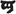

EIN LANGERWARTETES FEST
Als Herr Bilbo Beutlin von Beutelsend ankündigte, dass er seinen bevorstehenden einundelfzigsten Geburtstag mit einem rauschenden Fest zu feiern gedenke, begann in Hobbingen ein erregtes Getuschel.
Bilbo war sehr reich und sehr eigensinnig, und seit seinem auffälligen Verschwinden und seiner unerwarteten Rückkehr vor sechzig Jahren hatte man im Auenland nicht aufgehört, sich über ihn zu wundern. Um die Reichtümer, die er von seinen Reisen mitgebracht hatte, war längst eine Ortslegende entstanden: Was auch die älteren Leute dazu sagen mochten, die Jüngeren glaubten zu wissen, dass der Bühl von Beutelsend voller Stollen war, in denen Schätze gespeichert lagen. Und als ob der Gerüchte noch nicht genug wären, gab auch seine gar nicht altersgemäße Jugendfrische einigen Grund zur Verwunderung. Die Jahre vergingen, aber Herrn Beutlin schienen sie nichts anhaben zu können. Als er neunundneunzig war, fing man an, davon zu reden, dass er sich »gut gehalten« habe; doch wäre die Feststellung, dass er sich überhaupt nicht verändert hatte, der Wahrheit näher gekommen. Manche meinten kopfschüttelnd, dies alles sei wohl ein bisschen zuviel des Guten; irgendwie war es ungerecht, dass jemand, der sich schon einer (dem Augenschein nach) ewigen Jugend erfreute, auch noch ein (dem Vernehmen nach) unerschöpfliches Vermögen besaß.
»Irgendwann wird er dafür bezahlen müssen«, sagten sie. »Das ist nicht natürlich und wird noch übel ausgehen!«
Aber einstweilen ging es nicht übel aus; und weil Herr Beutlin mit seinem Geld nicht knauserte, waren die meisten Leute geneigt, ihm seine Eigenheiten und sein unverdientes Glück nachzusehen. Der Verkehr mit seinen Verwandten (die Sackheim-Beutlins natürlich ausgenommen) riss nicht ganz ab, und unter den Hobbits aus den ärmeren und nicht so angesehenen Familien hatte er viele treue Bewunderer. Aber echte Freunde gewann er erst wieder, als manche von seinen jüngeren Vettern allmählich erwachsen wurden.
Von diesen der älteste und Bilbo der liebste war der junge Frodo Beutlin. Als Bilbo neunundneunzig war, adoptierte er Frodo, setzte ihn zum Erben ein und holte ihn zu sich nach Beutelsend; alle Hoffnungen der Sackheim-Beutlins wurden damit endgültig zunichte. Zufällig hatten Bilbo und Frodo beide am 22. September Geburtstag. »Frodo, mein Junge«, sagte Bilbo eines Tages, »komm doch lieber und wohne bei mir; dann können wir unseren Geburtstag immer schön zusammen feiern.« Damals war Frodo noch in den »Zwiens«, wie die Hobbits das unreife Alter zwischen der Kindheit und dem Mündigwerden mit dreiunddreißig nannten.
Zwölf weitere Jahre waren vergangen. Jedes Mal hatten die beiden Beutlins am 22. September einen sehr munteren Doppelgeburtstag gefeiert; aber für diesen Herbst nun, so hörte man, bereiteten sie etwas ganz Außerordentliches vor. Bilbo wurde schließlich einundelfzig, 111, keine Zahl wie alle andern und ein sehr ansehnliches Alter für einen Hobbit (selbst der Alte Tuk war nur 130 geworden); und auch die dreiunddreißig, 33, die Frodo erreichte, war eine besondere Zahl, denn damit wurde er »mündig«.
In Hobbingen und Wasserau zerriss man sich die Mäuler, und das Gerücht von dem bevorstehenden Ereignis machte im ganzen Auenland die Runde. Herrn Bilbo Beutlins Lebensgeschichte und Charakter wurden wieder einmal zum Hauptgesprächsthema, und die Älteren fanden für ihre Erinnerungen dankbare Zuhörer.
Und niemand hatte dankbarere als der alte Ham Gamdschie, der bei den meisten nur der Ohm hieß. Ihm lauschte man im Efeubusch, einem kleinen Wirtshaus an der Straße nach Wasserau, und was er sagte, hatte Gewicht, denn seit vierzig Jahren war er der Gärtner in Beutelsend, und schon vorher hatte er dem alten Holman bei derselben Arbeit geholfen. Jetzt, wo er selbst alt wurde und schon ein bisschen steif in den Gelenken, erledigte das meiste sein jüngster Sohn Sam. Beide Gamdschies, Vater und Sohn, standen sich sehr gut mit Bilbo und Frodo. Sie wohnten auch auf dem Bühl, Beutelhaldenweg Nummer 3, etwas unterhalb von Beutelsend.
»Ein sehr feiner und vornehmer Hobbit ist der Herr Bilbo, wie ich schon immer gesagt hab«, versicherte der Ohm. Es stimmte vollkommen: Bilbo war sehr höflich zu ihm, redete ihn stets mit »Meister Hamfast« an und vergaß nie, in Fragen der Gemüsepflanzung seinen Rat einzuholen, denn in allem, was »Wurzeln«, besonders Kartoffeln, anging, wurde der Ohm von allen in der Nachbarschaft (ihn selbst nicht ausgenommen) als der maßgebliche Experte anerkannt.
»Aber was ist mit diesem Frodo, der bei ihm wohnt?«, fragte der alte Eichler aus Wasserau. »Beutlin heißt er zwar auch, aber der soll doch mehr als zur Hälfte ein Brandybock sein. Ich kann nicht begreifen, wie ein Beutlin aus Hobbingen dazu kommt, sich eine Frau da im Bockland zu nehmen, wo die Leute so komisch sind.«
»Und kein Wunder, dass die komisch sind!«, warf Vater Zwiefuß ein (der Nachbar des Ohms). »Die leben ja auch auf dem falschen Brandyweinufer und gleich am Alten Wald. Das ist eine üble, finstere Gegend, wenn nur die Hälfte von dem wahr ist, was man da hört.«
»Da hast du recht, Vater!«, sagte der Ohm. »Nicht dass die Bockländer Brandybocks nun direkt im Alten Wald leben; aber eine komische Sippschaft müssen sie schon sein. Auf so einen breiten Fluss, da schaukeln die mit Booten drauf rum – das ist doch nicht natürlich! Kein Wunder, dass da was passieren musste, würd ich sagen. Aber egal! Der Herr Frodo ist trotzdem ein so netter junger Hobbit, wie man sich einen nur wünschen kann. Kommt ganz nach dem Herrn Bilbo, und nicht nur im Aussehn. Sein Vater war eben ein Beutlin. Und ein grundanständiger Hobbit war er, der Herr Drogo Beutlin; über den gab es nie viel zu reden, bis er dann ertrunken wurde.«
»Ertrunken wurde?«, fragten mehrere zugleich. Natürlich waren ihnen diese und andere, noch dunklere Gerüchte schon zu Ohren gekommen; aber Hobbits haben eine Schwäche für Familiengeschichten und können sie nicht oft genug hören.
»Na ja, so heißt es«, sagte der Ohm. »Da seht ihr: Herr Drogo hat das Fräulein Primula Brandybock geheiratet, die Ärmste, und die war von unserm Herrn Bilbo die Kusine ersten Grades mütterlicherseits (ihre Mutter war die jüngste Tochter vom Alten Tuk), und Herr Drogo war sein Vetter zweiten Grades. Also ist Herr Frodo sein Vetter ersten und zweiten Grades, sozusagen um eine Generation verschoben, wenn ihr mir folgen könnt. Und Herr Drogo war im Brandygut zu Besuch bei seinem Schwiegervater, dem alten Herrn Gorbadoc, und nach seiner Heirat ist er da oft gewesen (er hatte nämlich viel übrig für Speis und Trank, und beim alten Gorbadoc wurde fürstlich getafelt); und er ist auf dem Brandywein Boot gefahren, und dabei wurden er und seine Frau dann ertrunken, wo der arme Herr Frodo doch noch ein Kind war, und überhaupt!«
»Ich hab gehört, sie sind nach dem Abendessen bei Mondschein aufs Wasser gegangen«, sagte der alte Eichler, »und was das Boot zum Sinken gebracht hat, war Drogos Gewicht.«
»Und ich hab gehört, sie hat ihn reingestoßen, und er hat sie nachgezogen«, sagte Sandigmann, der Müller von Hobbingen.
»Du musst nicht alles glauben, was du hörst, Sandigmann«, sagte der Ohm, der den Müller nicht allzu gut leiden konnte. »Es gibt keinen Grund, gleich von Stoßen und Ziehen daherzureden. Boote sind schon wackelig genug, auch wenn man ganz still sitzt; da braucht man gar nicht weiter nach einem Grund zu suchen, wenn etwas schief geht. Jedenfalls, da saß der Herr Frodo nun als Waise da, sozusagen gestrandet unter diesen komischen Bockländern, und ist im Brandygut aufgewachsen, man weiß nicht, wie. Ein richtiger Kaninchenbau, nach allem, was man so hört. Der alte Herr Gorbadoc hatte immer mindestens so an die zweihundert von seiner Sippschaft um sich. Herr Bilbo hat nie was Besseres getan, als den Jungen wieder hierher zu holen, wo er unter vernünftigen Leuten ist.
Aber für die Sackheim-Beutlins, denk ich mir, muss das ein harter Schlag gewesen sein. Die haben doch gedacht, sie kriegen Beutelsend, schon damals, als er losgezogen ist und für tot gehalten wurde. Und dann kommt er zurück und wirft sie raus! Und nun lebt er Jahr um Jahr und scheint keinen Tag älter zu werden, auf sein Wohl! Und plötzlich hat er auch noch einen Erben und lässt alle Papiere aufsetzen. Jetzt werden die Sackheim-Beutlins Beutelsend nicht mehr von innen sehn, oder jedenfalls steht’s zu hoffen.«
»Eine schöne Stange Geld soll da drin verstaut sein, hab ich gehört«, sagte ein Fremder, ein Geschäftsmann aus Michelbinge im Westviertel. »Die ganze Hügelkuppe soll ausgehöhlt sein: lauter Stollen voller Kisten mit Gold, Silber und Klunkern, hab ich gehört.«
»Dann haben Sie mehr gehört, als ich sagen kann«, antwortete der Ohm. »Und von Klunkern weiß ich überhaupt nichts. Herr Bilbo ist großzügig mit seinem Geld, und er scheint auch genug davon zu haben; aber dass er deswegen hätte Stollen graben müssen, davon weiß ich nichts. Ich hab ihn gesehen, als er wiederkam, sechzig Jahre ist das her, als ich ein junger Bursche war. Ich war noch nicht lange Lehrling beim alten Holman (der war ein Vetter von meinem Vater), aber er hat mich gleich mit rauf genommen nach Beutelsend: ich sollte aufpassen, dass die Leute während der Versteigerung nicht überall im Garten herumtrampelten. Und mitten in dem Trubel, da kommt der Herr Bilbo den Bühl rauf, mit einem Pony, ein paar mächtig großen Säcken und zwei Kisten. Sicher, da waren allerhand Schätze drin, die er sich in fremden Landen geholt hat, denn da soll das Gold ja bergeweise liegen; aber Stollen konnte er damit nicht füllen. Aber mein Junge, der Sam, weiß wohl mehr darüber, der geht in Beutelsend ein und aus. Ist ganz wild nach lauter solchen Geschichten aus alten Zeiten und hört sich alles an, was der Herr Bilbo so erzählt. Herr Bilbo hat ihm auch das Schreiben beigebracht – meint er nicht bös, wohlgemerkt, und ich hoffe, da wird auch nichts Böses bei rauskommen.
›Elben und Drachen?‹ sag ich zu ihm. ›Ach was, Kohl und Kartoffeln sind besser für dich und für mich. Misch dich bloß nicht in Angelegenheiten, von denen du nichts verstehst, sonst kriegst du mehr Ärger, als du vertragen kannst!‹ sag ich zu ihm. Und zu andern könnt ich dasselbe sagen«, setzte er mit einem Blick auf den Fremden und den Müller hinzu.
Aber der Ohm hatte seine Zuhörer nicht überzeugt. Bilbos sagenhafter Reichtum steckte schon zu fest in den Köpfen der jüngeren Hobbitgeneration.
»Na, aber der hat doch sicher inzwischen noch mehr bekommen, als er zuerst mitgebracht hat«, behauptete der Müller und sprach damit nur aus, was auch die anderen dachten. »Er ist oft verreist. Und seht euch doch bloß diese Fremdländer an, die ihn besuchen: Zwerge, die bei Nacht kommen, dieser alte Wandergaukler, der Gandalf, und wer nicht noch alles. Du kannst sagen, was du willst, Ohm, aber Beutelsend ist schon ein komisches Nest, und noch komischer sind die Leute dort.«
»Und du kannst auch sagen, was du willst, Herr Sandigmann, besonders über eine Sache, von der du genauso viel verstehst wie vom Booten«, sagte der Ohm und fand den Müller noch unleidlicher als sonst. »Wenn das komisch ist, dann könnten wir hier in der Gegend noch einige komische Leute mehr gebrauchen. Hier kenn ich ja welche, die würden einem Freund nicht mal ein Bier ausgeben, und wenn ihre Höhle auch goldene Wände hätte. Aber in Beutelsend machen sie’s schon recht. Unser Sam sagt, zu dem Fest werden alle eingeladen, und dann gibt es auch noch Geschenke, stellt euch vor, Geschenke für alle – und das noch in diesem Monat!«
Dieser Monat war der September, und das Wetter war so schön, wie man es sich nur wünschen konnte. Ein paar Tage später ging das Gerücht um (vermutlich von dem gut unterrichteten Sam ausgestreut), dass es ein Feuerwerk geben werde – und obendrein eines, wie man seit fast hundert Jahren, nämlich seit der Alte Tuk gestorben war, keines mehr gesehen hatte.
Die Tage vergingen, und der große Tag rückte näher. Eines Abends fuhr ein wunderlich aussehender Wagen durch Hobbingen, mit wunderlich aussehenden Paketen beladen, und rumpelte den Bühl hinauf nach Beutelsend. Die verdutzten Hobbits standen unter ihren Türlaternen und machten große Augen. Fremdländer lenkten ihn, die fremde Lieder sangen: Zwerge mit langen Bärten und tiefen Kapuzen. Ein paar von ihnen blieben in Beutelsend. Am Ende der zweiten Septemberwoche kam bei Tag ein Karren von Wasserau herein, aus der Richtung der Brandyweinbrücke. Nur ein alter Mann saß darauf. Er trug einen spitzen blauen Hut, einen langen grauen Mantel und ein silberweißes Halstuch. Sein langer Bart war weiß, und die buschigen Brauen ragten unter der Hutkrempe vor. Kleine Hobbitkinder rannten dem Wagen durch ganz Hobbingen und bis auf den Bühl hinterher. Was er brachte, hatten sie richtig erraten. Vor Bilbos Tür begann der Alte mit dem Abladen: Es waren große Bündel mit Feuerwerkskörpern jeder Art und Form, und jedes war mit einem dicken roten G  und der Elbenrune gezeichnet.
Natürlich, es war Gandalfs Zeichen, und der alte Mann war niemand anders als der Zauberer, dessen Ansehen im Auenland hauptsächlich auf seiner Meisterschaft im Umgang mit Feuer, Rauch und Licht beruhte. Sein wahres Geschäft war viel schwieriger und gefährlicher, aber davon wussten die Auenländer nichts. Für sie war er einfach eine »Attraktion« bei dem Fest: daher die Aufregung unter den Kindern. »G wie großartig!«, riefen sie, und der Alte grinste. Sie kannten ihn vom Sehen, obwohl er nur ab und zu nach Hobbingen kam und nie lange blieb. Aber weder sie noch irgendwer sonst außer den allerältesten Großeltern hatten je eines seiner Feuerwerke gesehen, die nun schon fast zur Legende geworden waren.
Als der Alte, unter Mithilfe Bilbos und einiger Zwerge, mit dem Abladen fertig geworden war, schenkte Bilbo den Kindern ein paar Pfennige; aber zu ihrer Enttäuschung wurde nicht ein einziger Kracher oder Knallfrosch losgelassen.
»Fort mit euch!«, sagte Gandalf. »Ihr werdet noch genug erleben, wenn es soweit ist.« Dann verschwand er mit Bilbo nach drinnen, und die Tür wurde geschlossen. Die kleinen Hobbits starrten noch eine Weile vergebens die Tür an, ehe sie mit dem Gefühl abzogen, dass es bis zum Tag des Festes noch unendlich lange hin sei.
Drinnen saßen Bilbo und Gandalf am offenen Fenster eines kleinen Zimmers, das nach Westen auf den Garten hinausging. Es war ein heller, ruhiger Spätnachmittag. Die Blumen schimmerten rot und golden: Löwenmaul und Sonnenblumen; und an den rasenbedeckten Höhlenwänden kletterte Kapuzinerkresse empor und lugte durch die runden Fenster herein.
»Wie er strahlt, dein Garten!«, sagte Gandalf.
»Ja«, sagte Bilbo, »Und ich hänge auch wirklich sehr daran, wie überhaupt an unserm lieben alten Auenland; aber ich glaube, ich brauche Urlaub davon!«
»Du willst deinen Plan also ausführen?«
»Ja. Ich habe mich vor Monaten dazu entschlossen, und es bleibt dabei.«
»Sehr gut! Dann sag ich besser nichts mehr. Bleib bei deinem Plan – dem ganzen Plan, wohlgemerkt –, und ich hoffe, alles wird sich zum Besten wenden, für dich und für uns alle.«
»Hoff ich auch! Jedenfalls will ich mich am Donnerstag amüsieren und mir meinen kleinen Scherz erlauben.«
»Ich frage mich nur, wer wohl drüber lachen wird«, sagte Gandalf kopfschüttelnd.
»Werden wir sehn!«, sagte Bilbo.
Am nächsten Tag kamen noch mehr Karren den Bühl heraufgefahren, einer nach dem andern. Die einheimischen Händler hätten ein wenig über die auswärtige Konkurrenz murren können, aber noch in derselben Woche ergoss sich aus Beutelsend eine Flut von Bestellungen nach jederlei Speisen, Getränken, Gebrauchsgegenständen und Luxusartikeln, die in Hobbingen, Wasserau oder sonstwo in der Nachbarschaft irgend zu haben waren. Begeisterung kam auf, man begann die Tage bis zum Fest auf dem Kalender abzuhaken; und jeder wartete gespannt, ob der Briefträger die Einladung brachte.
Und nicht lange, so überschwemmte eine Welle von Einladungen das Postamt von Hobbingen und trieb die Kollegen in Wasserau zur Verzweiflung, so dass sogar Freiwillige als Hilfsbriefträger angeworben werden mussten. Und bald darauf marschierten sie den Bühl hinauf und brachten in Hunderten von höflichen Abwandlungen immer wieder dieselbe Antwort: Danke, ich komme bestimmt.
An der Pforte von Beutelsend hing plötzlich ein Schild: KEIN ZUTRITT AUSSER ZU FESTVORBEREITUNGEN. Selbst diejenigen, die vorgeblich oder tatsächlich an den Vorbereitungen beteiligt waren, wurden nur selten eingelassen. Bilbo hatte allerhand zu tun: die Einladungen schreiben, die Antworten abhaken, Geschenke verpacken; und außerdem traf er noch einige persönliche Vorbereitungen ganz eigener Art. Seit Gandalf da war, ließ er sich nicht mehr sehen.
Eines Morgens wachten die Hobbits auf und sahen die große Wiese, die nach Süden zu vor Bilbos Tür lag, voller Seile und Stangen für große und kleine Zelte. Durch die Böschung zur Straße hin wurde ein gesonderter Eingang gezogen, mit breiten Stufen und einem großen weißen Tor. Die drei Hobbitfamilien vom Beutelhaldenweg, an den die Wiese grenzte, schauten interessiert zu und wurden allgemein beneidet. Der alte Hamfast Gamdschie tat nicht mal mehr so, als arbeite er in seinem Garten.
Allmählich wuchsen die Zelte in die Höhe. Eines war so groß, dass sogar der Baum, der auf der Wiese stand, darin Platz hatte. Stolz stand er am einen Ende, beim Kopf des Ehrentisches, an allen Zweigen mit Laternen behangen. Noch vielversprechender (in Hobbitaugen) sah eine große Küche aus, die auf dem Nordzipfel der Wiese im Freien aufgestellt wurde. Aus allen Wirtshäusern und Speiselokalen auf Meilen im Umkreis kamen die Köche herbei, um den Zwergen und den anderen Wunderlingen, die in Beutelsend einquartiert waren, behilflich zu sein. Die Vorfreude war auf dem Höhepunkt.
Dann bewölkte sich der Himmel. Das war am Mittwoch, dem Tag vor dem Fest. Alle waren ängstlich besorgt. Endlich war der Tag heran, Donnerstag, der 22. September. Die Sonne ging auf, und die Wolken zerstreuten sich, Fahnen wurden entrollt, und das Fest begann.
Bilbo Beutlin nannte es ein Fest, aber in Wirklichkeit war es eine Vielzahl von Lustbarkeiten, die zu einer einzigen gebündelt wurden. So gut wie jeder, der in der Nähe wohnte, war eingeladen. Einige, sehr wenige, waren versehentlich übergangen worden, aber als sie dann trotzdem kamen, störte es niemanden. Auch aus anderen Gegenden des Auenlands waren viele zu Gast, manche sogar von jenseits der Grenzen. Bilbo selbst begrüßte die Gäste (auch die nicht eingeladenen) an dem neuen weißen Tor. Er verteilte Geschenke an alle und etliche – und die etlichen waren diejenigen, die sich hinten herum wieder hinausschlichen und noch ein zweites Mal durchs Tor kamen. Hobbits machen anderen Leuten Geschenke, wenn sie selbst Geburtstag haben, in der Regel keine sehr teuren und nicht so verschwenderisch viele wie in diesem Falle; aber es ist kein schlechtes System. Da in Hobbingen und Wasserau eigentlich an jedem Tag im Jahr irgendwer Geburtstag hatte, konnte jeder Hobbit in dieser Gegend damit rechnen, mindestens einmal in der Woche ein Geschenk zu bekommen. Trotzdem wurden sie des Beschenktwerdens nie müde.
Bei dieser Gelegenheit waren die Geschenke außergewöhnlich gut. Die Hobbitkinder waren so entzückt, dass sie für eine Weile beinah das Essen vergaßen. Es gab Spielzeug, wie sie es noch nie gesehen hatten, alles wunderschön und manches offenbar magisch. Vieles davon war schon ein Jahr zuvor bestellt und nun über den weiten Weg vom Einsamen Berg und von Thal angeliefert worden: echte zwergische Erzeugnisse.
Nachdem jeder Gast begrüßt und alle schließlich auf der Wiese versammelt waren, gab es Lieder, Tänze, Musik, Spiele und, natürlich, zu essen und zu trinken. Offiziell wurden drei Mahlzeiten gereicht, zu Mittag, zum Tee und zu Abend; aber das Besondere an der Mittags- und der Teemahlzeit war nur, dass zu diesen Zeiten alle Gäste sich hinsetzten und gemeinsam aßen, während in der übrigen Zeit die meisten nur essend und trinkend herumstanden. Und so ging es ohne Pause von elf bis halb sieben, als das Feuerwerk anfing.
Das Feuerwerk war Gandalfs Sache: er hatte alles, was er dazu brauchte, nicht nur herbeigeschafft, sondern auch ausgedacht und hergestellt; und alle Spezialeffekte, Panoramen und Raketen ließ er selbst los. Aber er verteilte auch freigebig allerlei Frösche, Schwärmer, Kracher, Sprühregen, Fackeln, Zwergenkerzen, Elbenkaskaden, Orkbrüller und Kanonenschläge. Alle verrieten die Hand des Meisters. Mit zunehmendem Alter war Gandalf immer besser geworden.
Raketen stiegen auf wie ein Schwarm bunt glitzernder Vögel mit lieblichen Singstimmen. Grüne Baumkronen wuchsen aus Stämmen von dunklem Rauch; ihre Knospen öffneten sich, wie wenn ein ganzer Frühling in einem Moment aufbräche, und von ihren schimmernden Zweigen regneten glimmende Blüten auf die erstaunten Hobbits herab und lösten sich in einen süßen Duft auf, kurz bevor sie die nach oben gewandten Gesichter berührten. Fontänen von glitzernden Schmetterlingen sprühten zu den Baumwipfeln empor; vielfarbige Feuersäulen schossen in die Höhe und wurden zu Adlern, Segelschiffen oder einer Phalanx fliegender Schwäne; ein rotes Gewitter tobte, und ein gelber Regenguss ging nieder; ein Wald von silbernen Speeren flog jäh in die Luft, vom Schlachtruf eines Heeres begleitet, sank nieder und tauchte, wie hundert feurige Schlangen zischend, ins Wasser. Und dann kam noch eine letzte Überraschung, Bilbo zu Ehren, und jagte den Hobbits einen gewaltigen Schreck ein, wie Gandalf durchaus beabsichtigt hatte. Die Lichter gingen aus. Eine dicke Rauchwolke stieg auf. Bald sah sie aus wie ein Berg in der Ferne, und der Gipfel begann zu glühen. Er spie grüne und scharlachrote Flammen. Hervor kam ein rotgoldener Drache, nicht in Lebensgröße, doch fürchterlich naturgetreu: Flammen loderten aus seinem Rachen, seine Augen warfen blendende Strahlen zur Erde, und mit einem tosenden Geräusch fegte er dreimal über die Köpfe der Menge hinweg. Alle duckten sich, und manche warfen sich flach auf den Bauch. Wie ein Expresszug brauste der Drache davon, schlug einen Purzelbaum und explodierte mit ohrenbetäubendem Krachen über Wasserau.
»Das war das Zeichen zum Abendessen«, sagte Bilbo. Sofort waren Angst und Schrecken wie weggeblasen, und die Hobbits, die am Boden Deckung gesucht hatten, kamen schleunigst wieder auf die Füße. Es gab eine Schlemmermahlzeit für alle – alle, bis auf diejenigen, die zur Feier im engsten Familienkreis in das große Zelt mit dem Baum gebeten wurden. Hier beschränkten sich die Einladungen auf zwölf Dutzend (eine Zahl, die auch bei den Hobbits ein Gros hieß, obwohl das Wort in Bezug auf Personen als ungehörig galt), ausgewählte Gäste aus allen Familien, mit denen Bilbo und Frodo verwandt waren, nebst einigen guten, aber nicht verwandten Freunden (wie Gandalf). Auch viele junge Hobbits waren dabei, in Begleitung oder mit Erlaubnis ihrer Eltern; denn mit den Schlafenszeiten für die Kinder nahmen es die Hobbits nicht so genau, besonders wenn sich die Gelegenheit bot, ihnen eine kostenlose Mahlzeit zu verschaffen. Junge Hobbits satt zu kriegen war nicht billig.
Da sah man nun viele Beutlins und Boffins, allerlei Tuks und Brandybocks, manche Grubers (Verwandte von Bilbo Beutlins Großmutter), verschiedene Pausbackens (Verwandte seines Großvaters Tuk) und vereinzelte Wühlers, Bolgers, Straffgürtels, Brockhäusers, Gutleibs, Hornbläsers und Stolzfußens. Manche von diesen waren mit Bilbo nur ganz entfernt verwandt, und einige waren kaum je zuvor in Hobbingen gewesen, weil sie in entlegenen Winkeln des Auenlands wohnten. Die Sackheim-Beutlins waren nicht vergessen worden. Otho und seine Frau Lobelia waren da. Sie hassten Bilbo und verabscheuten Frodo, aber sie hatten eine so prächtige, mit goldener Tinte geschriebene Einladungskarte bekommen, dass sie nicht nein sagen konnten. Außerdem hatte ihr Vetter Bilbo seit vielen Jahren den Freuden der Tafel die höchste Aufmerksamkeit zugewandt, und seine Küche hatte einen vorzüglichen Ruf.
Alle hundertvierundvierzig Gäste machten sich auf ein gediegenes Festessen gefasst, auch wenn sie der (unvermeidlichen) Nachtischrede ihres Gastgebers mit einigem Grauen entgegensahen. Er streute bei solchen Gelegenheiten gern Sachen ein, von denen er meinte, dass es Gedichte seien, und wenn er ein, zwei Glas getrunken hatte, kam er auf die verrückten Abenteuer seiner mysteriösen Reise zu sprechen. Die Gäste wurden nicht enttäuscht: Es gab ein sehr anständiges Essen – oder richtiger, ein rundum zufriedenstellendes Gelage, nahrhaft, reichlich, vielseitig und lang ausgedehnt. Der Lebensmittelabsatz ging während der folgenden Wochen im ganzen Bezirk auf nahezu Null zurück; aber weil Bilbos Einkäufe die Läden, Keller und Lagerhäuser auf Meilen im Umkreis geleert hatten, war das kein Unglück.
Nachdem das Essen (mehr oder weniger) vorüber war, kam die Rede. Die meisten Gäste nippten und naschten zwar noch von dem, was sie am liebsten mochten, aber sie waren nun in duldsamer Laune, in jenem wohligen Stadium, in dem sie, wie sie es nannten, nur noch ein paar »Ecken ausstopfen« mussten; und alle Befürchtungen waren vergessen. Sie waren nun bereit, jede beliebige Rede über sich ergehen zu lassen und nach jedem Satz Beifall zu spenden.
Meine lieben Leute! begann Bilbo, von seinem Stuhl aufstehend. »Hört! Hört! Hört!«, riefen sie und wiederholten es im Chor so lange, bis man zweifeln konnte, ob sie bereit waren, den eigenen guten Rat zu befolgen. Bilbo verließ seinen Platz und stellte sich auf einen Stuhl zu Füßen des hell beleuchteten Baums. Das Licht der Laternen fiel auf sein strahlendes Gesicht; die goldenen Knöpfe glänzten an seiner bestickten Seidenweste. Alle konnten ihn sehen, wie er dort stand, mit der einen Hand in der Luft herumfuchtelnd, die andere Hand in der Hosentasche.
Meine lieben Beutlins und Boffins, begann er noch einmal, meine lieben Tuks und Brandybocks, Grubers und Pausbackens, Wühlers, Hornbläsers, Bolgers, Straffgürtels, Gutleibs, Brockhäusers und Stolzfußens.
»StolzFÜSSER!«, rief ein älterer Hobbit aus dem hinteren Teil des Zeltes dazwischen. Er hieß natürlich Stolzfuß, und zwar mit Recht, denn er hatte große Füße mit außerordentlich dichtem Pelz, und beide lagen auf dem Tisch.
Stolzfußens, wiederholte Bilbo. Und auch meine lieben Sackheim-Beutlins, die ich endlich wieder einmal in Beutelsend begrüßen darf. Heute ist mein hundertundelfter Geburtstag: Ich bin heute einundelfzig geworden!
»Hurra! Hurra! Hoch soll er leben!«, brüllten sie und trommelten begeistert auf die Tische. Bilbo war hervorragend. Solche Reden hörten sie gern: kurz und eindeutig.
Ich hoffe, es gefällt euch allen ebenso wie mir. Ohrenbetäubender Beifall. Laute Ja- (und Nein-)Rufe. Trompeten, Hörner, Pfeifen, Flöten und noch andere Instrumente lärmten durcheinander. Wie schon gesagt, waren auch viele junge Hobbits dabei. Hunderte von musikalischen Knallfröschen waren verteilt worden, die meisten mit dem Herkunftszeichen von THAL, das den meisten Hobbits nichts sagte; aber alle fanden, dass sie hervorragend funktionierten. Sie enthielten jeder ein Instrument, ein sehr kleines zwar, doch von perfekter Machart und bezauberndem Klang. Einige junge Tuks und Brandybocks, in der Annahme, der Onkel Bilbo sei fertig (denn er hatte doch schon alles Nötige gesagt), stellten sogar ein Orchester auf die Beine und fingen an, aus dem Stegreif zum Tanz aufzuspielen. Der junge Herr Everard Tuk und Fräulein Melilot Brandybock sprangen auf den Tisch und begannen mit Schellen in den Händen einen Springelring zu tanzen: ein hübscher, aber ziemlich wuchtiger Tanz.
Aber Bilbo war noch nicht fertig. Von einem Jungen, der neben ihm stand, griff er sich ein Horn und stieß dreimal laut hinein. Der Lärm ließ nach. Ich will euch nicht lange aufhalten, rief er. Beifall von allen Anwesenden. Ich habe euch alle zu einem bestimmten Zweck hier zusammengerufen. Irgendwas an der Art, wie er das sagte, machte Eindruck. Es wurde fast still, und der eine oder andere von den Tuks spitzte die Ohren.
Eigentlich zu drei Zwecken: zuerst mal, euch zu sagen, dass ich euch alle sehr, sehr gern habe und dass einundelfzig Jahre für ein Leben unter so vortrefflichen und bewundernswerten Hobbits eine zu kurze Zeit sind.
Ich kenne nicht die Hälfte von euch halb so gut, wie ich euch gern kennen würde; und ich habe nicht die Hälfte von euch halb so gern, wie ihr es verdienen würdet. Das kam unerwartet und klang ein bisschen kompliziert. Hier und da klatschte jemand, aber die meisten überlegten und versuchten sich drüber klar zu werden, ob es wirklich ein Kompliment war.
Zweitens, um meinen Geburtstag zu feiern. Wieder Beifall. Oder, sollte ich sagen, UNSEREN Geburtstag. Denn Geburtstag hat natürlich auch mein Erbe und Neffe Frodo. Er wird heute mündig und tritt sein Erbe an.
Flüchtiger Beifall von den Älteren, ein paar laute Zurufe von den Jungen: »Frodo! Frodo, alter Knabe!« Die Sackheim-Beutlins schnitten Grimassen und fragten sich, was »sein Erbe antreten« hier wohl bedeuten mochte.
Zusammen sind wir hundertvierundvierzig Jahre alt. Eure Zahl wurde so bemessen, dass sie dieser stattlichen Summe entspricht: ein Gros, wenn ich einmal so sagen darf.
Nun klatschte niemand. Das war zu albern. Viele Gäste, besonders die Sackheim-Beutlins, waren gekränkt, in dem sicheren Gefühl, dass man sie nur eingeladen hatte, um die Zahl voll zu machen – wie man Eier in einen Karton steckt. »Ein Gros, das ist die Höhe! Wie ordinär!«
Heute ist außerdem, wenn ich eine alte Geschichte erwähnen darf, der Jahrestag meiner Ankunft per Fass in Esgaroth am Langen See; allerdings ist mir die Tatsache, dass es mein Geburtstag war, damals entgangen. Ich war erst einundfünfzig und nahm die Geburtstage noch nicht so wichtig. Trotzdem war das Bankett auch damals sehr ansehnlich; nur erinnere ich mich, dass ich einen üblen Schnupfen hatte und bloß noch »dabke vielbals« sagen konnte. Das will ich heute in korrekterer Form wiederholen. Ich danke euch vielmals, dass ihr zu meinem kleinen Fest gekommen seid.
Beharrliches Schweigen. Alle befürchteten, nun käme gleich ein Lied oder irgendwelche Lyrik. Allmählich fühlten sie sich angeödet. Warum konnte er nicht aufhören zu reden und sie auf sein Wohl trinken lassen? Aber Bilbo fing nicht an zu singen oder etwas aufzusagen. Er machte eine kurze Pause.
Drittens und zuletzt, sagte er, möchte ich etwas BEKANNTGEBEN. Das letzte Wort sagte er so laut und nachdrücklich, dass alle die Köpfe hoben, die noch dazu fähig waren. Mit Bedauern gebe ich bekannt, dass dies – obwohl, wie schon gesagt, einundelfzig Jahre für ein Leben unter euch viel zu wenig sind – das ENDE ist. Ich gehe fort. Ich verlasse euch JETZT. LEBT WOHL!
Er stieg vom Stuhl herab und war verschwunden. Ein blendendes Licht blitzte auf, und alle Gäste mussten blinzeln. Als sie die Augen wieder aufbekamen, war Bilbo nirgendwo zu sehen. Hundertvierundvierzig entgeisterte Hobbits saßen da und waren sprachlos. Der alte Odo Stolzfuß nahm beide Füße vom Tisch und stampfte auf. Dann war es totenstill. Endlich, nachdem sie mehrere Mal tief durchgeatmet hatten, begannen sämtliche Beutlins, Boffins, Tuks, Brandybocks, Grubers, Pausbackens, Wühlers, Bolgers, Straffgürtels, Brockhäusers, Gutleibs, Hornbläsers und Stolzfußens auf einmal zu reden.
Man war sich einig, dass es ein Scherz von sehr schlechtem Geschmack war und dass man nun erst mal etwas zu sich nehmen musste, um den Schock und den Ärger zu lindern. »Er ist verrückt, hab ich doch schon immer gesagt«, war wohl die am häufigsten zu hörende Bemerkung. Sogar die Tuks (mit wenigen Ausnahmen) fanden Bilbos Verhalten töricht. Die meisten hielten es einstweilen für selbstverständlich, dass sein Verschwinden nicht mehr war als ein alberner Streich.
Aber der alte Rorig Brandybock war nicht so sicher. Weder das Alter noch die gewaltige Mahlzeit hatten seinen Verstand getrübt, und er sagte zu seiner Schwiegertochter Esmeralda: »Da ist etwas faul, meine Liebe! Ich glaube, dieser verrückte Beutlin ist wieder auf und davon. Alter Narr! Aber was sollen wir uns grämen? Das Wichtigste hat er ja dagelassen.« Und er rief laut zu Frodo hinüber, er solle die Weinflaschen noch mal herumgehen lassen.
Frodo war von allen der einzige, der nichts gesagt hatte. Eine Zeit lang blieb er stumm neben Bilbos leerem Stuhl sitzen und ging auf all die Fragen und das Gerede nicht ein. Ihm hatte Bilbos Streich gefallen, allerdings war er natürlich vorher eingeweiht worden. Es fiel ihm schwer, über die Entrüstung der verdutzten Gäste nicht laut zu lachen. Doch zugleich war er tief beunruhigt. Ihm wurde plötzlich klar, wie sehr er an dem alten Hobbit hing. Die meisten Gäste aßen und tranken weiter und erörterten Bilbo Beutlins frühere und derzeitige Schrullen; aber die Sackheim-Beutlins waren schon im Zorn aufgebrochen. Frodo hatte von dem Fest genug. Er ließ noch mehr Wein auftragen; dann stand er auf, leerte stumm sein Glas auf Bilbos Wohl und huschte aus dem Zelt.
Und Bilbo Beutlin? Schon während er seine Rede hielt, hatte er mit dem goldenen Ring in seiner Tasche gespielt, dem Zauberring, dessen Geheimnis er so viele Jahre gewahrt hatte. Als er vom Stuhl stieg, schob er ihn sich auf den Finger und wurde von keinem Hobbit in Hobbingen je wieder gesehen.
Rasch ging er zu seiner Höhle. Dort blieb er einen Moment stehen und horchte lächelnd auf das Getöse aus dem Zelt und den Festtrubel von den anderen Teilen der Wiese. Dann ging er hinein. Er legte den Festtagsanzug ab, faltete die bestickte Seidenweste zusammen, wickelte sie in Seidenpapier und steckte sie weg. Schnell streifte er ein paar alte, geflickte Sachen über und schnallte einen abgewetzten Ledergürtel um. Daran hängte er ein kurzes Schwert in einer Scheide aus verwittertem schwarzen Leder. Aus einer verschlossenen Schublade, die nach Mottenkugeln roch, holte er einen alten Kapuzenmantel hervor. Er hatte ihn verwahrt wie eine Kostbarkeit, doch hatte er so viele Flicken und Flecken, dass die ursprüngliche Farbe kaum mehr zu erraten war; vielleicht war er einmal dunkelgrün gewesen. Obendrein war er ihm etwas zu groß. Dann ging er in sein Studierzimmer und nahm aus einer großen eisernen Truhe ein in Lappen gewickeltes Bündel und ein in Leder gebundenes Buch, außerdem einen großen, festen Briefumschlag. Buch und Bündel stopfte er zuoberst in einen bereitstehenden schweren Rucksack, der schon fast voll war. In den Umschlag steckte er seinen goldenen Ring mitsamt dem Kettchen; dann verschloss er ihn und schrieb Frodos Namen drauf. Zuerst legte er ihn auf den Kaminsims, aber plötzlich nahm er ihn wieder weg und steckte ihn sich in die Tasche. In diesem Augenblick ging die Tür auf, und Gandalf kam rasch herein.
»Hallo!«, sagte Bilbo. »Ich fragte mich schon, ob du noch mal hereinschaust.«
»Ich bin froh, dich sichtbar vorzufinden«, antwortete der Zauberer und setzte sich auf einen Stuhl. »Ich wollte dich unbedingt noch mal erwischen und ein paar letzte Worte loswerden. Ich nehme an, du findest, dass alles bestens und nach Plan verlaufen ist?«
»Ja, finde ich«, sagte Bilbo. »Nur dieser Blitz kam unvorhergesehen; er hat sogar mich erschreckt, um so mehr die anderen. Eine kleine Zugabe von dir, nehm ich an?«
»Allerdings. Du hast klugerweise diesen Ring all die Jahre über geheimgehalten, und ich hielt es für nötig, deinen Gästen etwas zu bieten, das dein plötzliches Verschwinden scheinbar erklären könnte.«
»Und das mir den Spaß verdirbt!«, sagte Bilbo und lachte. »Musst du dich denn in alles einmischen? Aber wahrscheinlich weißt du es wieder mal am besten.«
»Freilich – wenn ich etwas weiß, dann weiß ich es am besten. Aber in dieser Sache bin ich mir nicht so sicher. Sie wäre nun abgeschlossen. Deinen Spaß hast du gehabt, die meisten deiner Verwandten schockiert oder beleidigt und dem ganzen Auenland Gesprächsstoff für neun bis neunundneunzig Tage gegeben. Hast du noch mehr dergleichen vor?«
»In der Tat! Mir ist nach einem Urlaub zumute, einem sehr langen Urlaub, wie ich dir schon sagte. Wahrscheinlich wird es ein Dauerurlaub: Ich glaube nicht, dass ich wiederkomme. Jedenfalls habe ich nicht die Absicht, und ich habe alle Vorkehrungen getroffen.
»Ich bin alt, Gandalf. Man sieht es mir nicht an, aber im Innersten spüre ich’s nun. Noch gut erhalten, von wegen!«, brummte er. »Nun, ich komme mir dünn vor, sozusagen gestreckt, versteh mich recht, wie zu dünn aufs Brot gestrichene Butter. Das kann doch nicht in Ordnung sein. Ich brauche eine Veränderung, irgendetwas.«
Gandalf musterte ihn eindringlich. »Nein, das kann wohl nicht in Ordnung sein«, sagte er nachdenklich. »Nein, letzten Endes, glaube ich, ist dein Plan wahrscheinlich der beste.«
»Jedenfalls, ich bin fest entschlossen. Ich will wieder Berge sehn, Gandalf, Berge, und dann einen Ort finden, wo ich meine Ruhe habe. Wo man mich in Frieden lässt, wo diese Horde von neugierigen Verwandten mir nicht zusetzt, wo nicht dauernd irgendein lästiger Besuch vor der Tür steht. Vielleicht finde ich sogar einen Ort, wo ich mein Buch zu Ende schreiben kann. Ich habe mir schon einen hübschen Schluss ausgedacht: Und er lebte glücklich und zufrieden bis ans Ende seiner Tage.«
Gandalf lachte. »Das wünsche ich ihm. Aber niemand wird das Buch lesen, egal wie es endet.«
»Ach, vielleicht doch der eine oder andere, in späteren Jahren. Frodo hat schon einiges gelesen, so weit, wie ich gekommen bin. Du wirst doch ein Auge auf Frodo haben, ja?«
»Sogar zwei Augen, sooft ich sie entbehren kann.«
»Er würde mich selbstverständlich begleiten, wenn ich ihn darum bäte. Er hat es mir sogar schon angeboten, kurz vor dem Fest. Aber eigentlich möchte er nicht fort, noch nicht. Ich will, bevor ich sterbe, das wilde Land noch einmal sehn und das Gebirge; er aber hängt noch zu sehr am Auenland mit seinen Wiesen und Wäldern und den kleinen Flüssen. Hier müsste es ihm gut gehen. Natürlich hinterlasse ich ihm alles bis auf ein paar Kleinigkeiten. Ich hoffe, er wird glücklich, wenn er sich erst mal daran gewöhnt hat, auf eigenen Füßen zu stehn. Es wurde Zeit, dass er sein eigener Herr wird.«
»Alles?«, sagte Gandalf. »Auch den Ring? Darin hattest du eingewilligt, erinnere dich!«
»Na, hm, ja, ich denke schon«, stammelte Bilbo.
»Wo ist er?«
»In einem Umschlag, wenn du’s unbedingt wissen musst«, sagte Bilbo gereizt. »Da auf dem Kaminsims. Ach nein! Ich hab ihn ja noch in der Tasche!« Er zögerte. »Ist das nicht sonderbar?«, sagte er leise zu sich selbst. »Aber warum denn auch nicht? Warum kann er nicht dort bleiben?«
Gandalf musterte ihn wieder, diesmal sehr scharf und mit einem Funkeln in den Augen. »Ich an deiner Stelle würde ihn hier lassen, Bilbo«, sagte er ruhig. »Willst du’s nicht?«
»Na ja – und nein. Jetzt, wo es so weit ist, möchte ich mich gar nicht mehr von ihm trennen, wenn ich das sagen darf. Und ich sehe nicht ein, warum ich es sollte. Warum verlangst du das von mir?«, fragte er, und seine Stimme veränderte sich merkwürdig. Sie klang scharf vor Ärger und Argwohn. »Immer löcherst du mich wegen des Rings! Wegen der anderen Dinge, die ich von meiner Fahrt mitgebracht habe, hast du mir nie so zugesetzt.«
»Nein, aber ich musste dich löchern«, sagte Gandalf. »Ich wollte die Wahrheit wissen. Es war wichtig. Zauberringe sind – nun, eben Zauberringe; sie sind selten und sonderbar. Ich war sozusagen von Berufs wegen an deinem Ring interessiert und bin es noch. Ich will wissen, wo er sich befindet, wenn du wieder auf Wanderschaft gehst. Und ich denke auch, du hast ihn lange genug gehabt. Du wirst ihn nicht mehr brauchen, Bilbo, wenn ich mich nicht sehr irre.«
Bilbo lief rot an, und ein zorniges Glitzern trat in seine Augen. Seine freundlichen Gesichtszüge wurden hart. »Warum nicht?«, rief er. »Und was geht es überhaupt dich an; warum musst du unbedingt wissen, was ich mit meinen Sachen mache? Er gehört mir. Ich hab ihn gefunden. Er ist zu mir gekommen!«
»Ja, ja«, sagte Gandalf. »Kein Grund, gleich böse zu werden!«
»Und wenn ich böse werde, bist du schuld!«, sagte Bilbo. »Mir gehört er, sag ich dir. Er ist meiner. Mein Schatz. Ja, mein Schatz.«
Die Miene des Zauberers blieb ernst und gefasst, und nur ein Flackern in der Tiefe seiner Augen verriet, dass er besorgt und sogar erschrocken war. »So hat ihn doch schon einmal jemand genannt«, sagte er, »aber das warst nicht du.«
»Aber jetzt sag ich’s. Und warum nicht? Auch wenn Gollum mal dasselbe gesagt hat. Jetzt gehört er nicht ihm, sondern mir. Und ich behalte ihn, sag ich!«
Gandalf stand auf. Er schlug einen strengen Ton an. »Du bist ein Narr, wenn du das tust, Bilbo«, sagte er. »Mit jedem Wort, das du sagst, machst du das deutlicher. Er hat dich schon viel zu fest in seiner Gewalt. Lass ihn los! Und dann kannst du losgehen und bist von ihm frei.«
»Ich tu, was mir beliebt, und gehe, wenn es mir passt«, beharrte Bilbo.
»Komm, komm, mein lieber Hobbit!«, sagte Gandalf. »Dein ganzes langes Leben lang waren wir Freunde, und du bist mir etwas schuldig. Also tu, was du versprochen hast: gib den Ring auf!«
»Wenn du den Ring für dich haben willst, dann sag’s doch!«, rief Bilbo. »Aber du kriegst ihn nicht. Ich sage dir, ich gebe meinen Schatz nicht her.« Seine Hand zuckte zum Heft seines kleinen Schwerts hin.
Gandalfs Augen blitzten. »Jetzt werde ich gleich böse«, sagte er, »wenn du das noch mal sagst. Dann wirst du Gandalf den Grauen einmal unverhüllt sehen.« Er trat einen Schritt auf den Hobbit zu und schien dabei bedrohlich in die Höhe zu wachsen. Sein Schatten erfüllte das ganze kleine Zimmer.
Schwer atmend wich Bilbo zurück bis zur Wand und umklammerte mit der Hand seine Tasche. Einen Moment lang standen sie sich gegenüber, und die Luft im Zimmer schien zu knistern. Gandalf hielt den Blick auf den Hobbit geheftet. Langsam entkrampften sich Bilbos Hände, und er fing an zu zittern.
»Ich weiß nicht, was in dich gefahren ist, Gandalf«, sagte er. »So bist du noch nie gewesen. Was soll das alles? Er gehört mir doch, oder nicht? Ich habe ihn gefunden, und Gollum hätte mich getötet, wenn ich ihn nicht behalten hätte. Ich bin kein Dieb, wie er gesagt hat.«
»Ich habe nie gesagt, dass du einer bist«, antwortete Gandalf. »Und auch ich bin keiner. Ich will ihn dir nicht rauben, ich will dir helfen. Wenn du mir doch nur vertrauen würdest, wie früher!« Er wandte sich ab, und der Schatten verschwand. Gandalf schien wieder zu einem grauen alten Mann zu schrumpfen, gebeugt und sorgenbeladen.
Bilbo strich sich mit der Hand über die Augen. »Tut mir leid«, sagte er. »Aber mir war so komisch. Und dabei wäre es doch eine gewisse Erleichterung, ihn nicht mehr herumschleppen zu müssen. In letzter Zeit hat er in meinem Kopf immer mehr Platz eingenommen. Manchmal kam es mir vor, als würde er mich ansehen wie ein Auge. Und, weißt du, ich habe ständig den Wunsch, ihn auf den Finger zu stecken und zu verschwinden; oder ich mache mir Sorgen, ob er sicher verwahrt ist, und hole ihn hervor, um mich zu vergewissern. Ich habe versucht, ihn wegzuschließen, aber ich hatte keine Ruhe, wenn er nicht in meiner Tasche war. Warum, weiß ich nicht. Und mir scheint, ich kann mich nicht entscheiden.«
»Dann überlass mir das«, sagte Gandalf. »Ich habe mich entschieden. Geh fort und lass den Ring hier! Du darfst ihn nicht länger besitzen. Gib ihn Frodo, und um Frodo werde ich mich kümmern.«
Bilbo stand einen Moment steif und unschlüssig da. Er seufzte. »Na schön«, sagte er, und es kostete ihn Überwindung. »Ich tu’s.« Dann zuckte er die Achseln und lächelte, aber ein bisschen kläglich. »Schließlich ging es doch bei diesem ganzen Fest nur darum: haufenweise Geburtstagsgeschenke herzugeben, in der Hoffnung, dass es dadurch leichter würde, ihn auch herzugeben. Es ist zwar am Ende dadurch nicht leichter geworden, aber es wäre doch schade, wenn all die Vorbereitungen vergeblich gewesen sein sollten. Damit wäre der Spaß erst recht verdorben.«
»In der Tat, es würde der Sache den einzigen Sinn nehmen, den ich darin sehen konnte«, sagte Gandalf.
»Also gut«, sagte Bilbo, »Frodo bekommt ihn mit allem übrigen.« Er holte tief Luft. »Und nun muss ich wirklich aufbrechen, sonst erwischt mich noch jemand. Ich habe schon Lebwohl gesagt, und einen zweiten Abschied könnte ich nicht ertragen.« Er hob den Rucksack auf und ging zur Tür.
»Du hast den Ring immer noch in der Tasche«, sagte der Zauberer.
»Ach ja, stimmt!«, rief Bilbo. »Und mein Testament und all die anderen Urkunden auch. Am besten, du nimmst es und übergibst es in meinem Namen. So ist es am sichersten.«
»Nein, gib den Ring nicht mir!«, sagte Gandalf. »Leg ihn auf den Kaminsims. Da liegt er sicher genug, bis Frodo kommt. Ich werde auf ihn warten.«
Bilbo nahm den Umschlag aus der Tasche, aber gerade als er ihn an die Uhr lehnen wollte, zuckte seine Hand zurück, und das Päckchen fiel zu Boden. Bevor er es aufheben konnte, hatte der Zauberer sich schon gebückt, es genommen und an seinen Platz gelegt. Das Gesicht des Hobbits wurde wieder starr vor Zorn, aber gleich darauf lockerte es sich in einem erleichterten Auflachen.
»Also, das wär’s«, sagte er. »Ich geh los.«
Sie traten hinaus auf die Diele. Bilbo nahm sich seinen Lieblingsstock aus dem Schirmständer; dann pfiff er. Drei Zwerge kamen aus verschiedenen Zimmern, in denen sie zu tun gehabt hatten.
»Alles fertig?«, fragte Bilbo. »Alles eingepackt und mit Schildchen dran?«
»Alles«, antworteten sie.
»Na, dann los!« Er trat aus der Tür.
Es war eine schöne Nacht, und der schwarze Himmel war mit Sternen gesprenkelt. Er blickte hoch und prüfte schnuppernd die Luft. »Was bin ich froh! Was bin ich froh, wieder loszugehn, mit Zwergen unterwegs zu sein! Das hat mir gefehlt, seit Jahren schon! Auf Wiedersehn!«, sagte er und blickte noch mal zu seiner alten Höhle zurück, mit einer Verbeugung zur Tür hin. »Auf Wiedersehn, Gandalf!«
»Auf Wiedersehn, Bilbo, einstweilen! Gib auf dich Acht! Alt genug bist du, und gescheit genug vielleicht auch.«
»Auf mich Acht geben? Ich denk nicht dran. Mach dir keine Sorgen um mich! Ich bin so glücklich wie nur je zuvor, und das will etwas heißen. Aber nun ist es Zeit. Nun endlich zieht es mich fort«, fügte er hinzu, und dann, mit leiser Stimme, sang er im Dunkeln vor sich hin:
Die Straße gleitet fort und fort,
Weg von der Tür, wo sie begann,
Weit überland, von Ort zu Ort,
Ich folge ihr, so gut ich kann.
Ihr lauf ich raschen Fußes nach,
Bis sie sich groß und breit verflicht
Mit Weg und Wagnis tausendfach.
Und wohin dann? Ich weiß es nicht.
Er hielt einen Augenblick inne. Dann, ohne ein weiteres Wort, wandte er sich weg von den Lichtern und dem Stimmengewirr auf dem Festplatz und in den Zelten, ging von seinen drei Begleitern gefolgt durch den Garten und schritt den langen, abschüssigen Pfad hinab. Unten sprang er an einer niedrigen Stelle über die Hecke, schlug den Weg über die Wiesen ein und verschwand in der Nacht wie ein raschelnder Windhauch im Grase.
Gandalf blieb noch eine Weile stehen und sah ihm durch die Dunkelheit nach. »Lebe wohl, mein guter Bilbo – bis zu unserm nächsten Wiedersehen!«, sagte er leise und ging nach drinnen.
Bald darauf kam Frodo und fand ihn im Dunkeln sitzend, tief in Gedanken. »Ist er fort?«, fragte er.
»Ja«, antwortete Gandalf, »er ist schließlich doch gegangen.«
»Ich wünschte – ich meine, bis heute Abend hab ich gehofft, dass es nur ein Scherz war«, sagte Frodo. »Aber im Grunde wusste ich, dass er wirklich fort wollte. Er hat schon immer Witze gemacht über Dinge, die ihm ernst waren. Ich wünschte, ich wäre früher gekommen, um Abschied zu nehmen.«
»Ich glaube, ihm war es am Ende lieber, in aller Stille verschwinden zu können«, sagte Gandalf. »Mach dir nicht zu viele Sorgen. Er wird jetzt wohlauf sein. Er hat ein Päckchen für dich hinterlassen. Da liegt es!«
Frodo nahm den Umschlag vom Kaminsims und betrachtete ihn, ohne ihn zu öffnen.
»Darin findest du sein Testament und alle andern Urkunden, glaube ich«, sagte der Zauberer. »Du bist nun der Herr von Beutelsend. Und außerdem, vermute ich mal, wirst du einen goldenen Ring darin finden.«
»Den Ring!«, rief Frodo aus. »Den hat er mir auch dagelassen? Warum nur? Immerhin, vielleicht ist er ja nützlich.«
»Vielleicht ist er das, vielleicht nicht«, sagte Gandalf. »Ich an deiner Stelle würde ihn nicht benutzen. Aber halte ihn geheim und verwahre ihn gut. Ich gehe jetzt schlafen.«
Als Herr von Beutelsend hielt es Frodo für seine lästige Pflicht, die Gäste zu verabschieden. Gerüchte von seltsamen Vorfällen hatten sich inzwischen über die ganze Festwiese ausgebreitet, aber Frodo wollte dazu nichts weiter sagen, als dass sich am Morgen alles zweifellos aufklären werde. Gegen Mitternacht kamen die Kutschen für die besseren Herrschaften. Eine nach der andern rollten sie davon, voller satter und dennoch unbefriedigter Hobbits. Dann, wie vorher verabredet, kamen Gärtner und entfernten die versehentlich Liegengelassenen mit Schubkarren.
Langsam verging die Nacht. Die Sonne stieg an den Himmel. Die Hobbits stiegen noch lange nicht aus den Betten. Der Morgen ging in den Vormittag über. Leute kamen (sie waren herbestellt) und fingen an, die Zelte, Tische und Stühle wegzuräumen, die Messer, Löffel, Flaschen und Teller, die Laternen und Blumentöpfe, die Krümel, die abgebrannten Knallfrösche, die vergessenen Handtaschen, Handschuhe und Taschentücher und die übrig gebliebenen Speisen (ein sehr kleiner Posten). Dann kam eine Anzahl anderer (nicht herbestellter) Leute: Beutlins, Boffins, Bolgers, Tuks und andere Gäste, die in der Nähe wohnten oder übernachtet hatten. Gegen Mittag, als auch die wieder auf den Beinen waren, die am ausgiebigsten getafelt hatten, stand in Beutelsend ein großer Haufen uneingeladener, aber nicht unerwarteter Besucher vor der Tür.
Frodo empfing sie auf der Schwelle, lächelnd, aber ziemlich müd und besorgt dreinschauend. Er begrüßte alle, die kamen, hatte ihnen aber nicht viel mehr zu sagen als am Abend vorher. Seine Antwort auf alle Erkundigungen lautete einfach: »Herr Bilbo Beutlin ist fort; soviel ich weiß, für immer.« Manche Besucher bat er herein, weil Bilbo eine »Nachricht« für sie hinterlassen hatte.
In der Diele lag ein großer Stapel Pakete und Päckchen, auch einige kleinere Möbelstücke. An jedem war ein Kärtchen festgebunden. Auf einigen stand etwas von der Art:
Für ADELARD TUK zum Mitnehmen, von Bilbo; an einem Regenschirm. Adelard hatte schon viele Regenschirme mitgenommen, auch ohne dass ein Kärtchen ihn dazu aufforderte.
Für DORA BEUTLIN im Gedenken an eine LANGE Korrespondenz, schönen Gruß, Bilbo; an einem großen Papierkorb. Dora war Drogo Beutlins Schwester, Bilbos und Frodos älteste lebende Verwandte; sie war neunundneunzig und hatte Bilbo seit über einem halben Jahrhundert Bände voller guter Ratschläge geschrieben.
Für MILO WÜHLER, in der Hoffnung, dass es was nützt, von B. B.; an einem goldenen Federhalter mit Tintenfass. Milo blieb auf alle Briefe die Antwort schuldig.
Für ANGELIKA, zur geflissentlichen Verwendung, von Onkel Bilbo; an einem runden Zerrspiegel. Angelika war eine junge Beutlin und machte sich allzu offensichtlich gern selbst schöne Augen.
Für HUGO STRAFFGÜRTELS Sammlung, von einem Leihgeber; an einem (leeren) Bücherregal. Hugo war groß im Bücherentleihen und nicht so gut im Zurückgeben.
Für LOBELIA SACKHEIM-BEUTLIN, als GESCHENK; an einem Karton silberne Löffel. Bilbo glaubte, dass sie sich etliche von seinen Löffeln angeeignet hatte, als er auf seiner großen Fahrt war. Lobelia glaubte das nicht nur, sie wusste es, und als sie später am Tage kam, verstand sie sofort, wie es gemeint war. Die Löffel nahm sie trotzdem.
Dies waren nur einige der bereit liegenden Geschenke. In Bilbos Behausung hatte sich im Laufe seines langen Lebens allerhand Zeug angesammelt. Die meisten Hobbithöhlen wurden mit der Zeit vollgestopft, woran vor allen die Sitte, so viele Geburtstagsgeschenke zu verteilen, schuld war. Zwar schenkte man seinen Gästen natürlich nicht immer neue Sachen, und ein oder zwei alte Mathoms, deren Verwendungszweck niemand mehr kannte, waren schon in der ganzen Gegend reihum gegangen; doch Bilbo hatte gewöhnlich neue Geschenke gemacht und die seinerseits empfangenen Geschenke behalten. Nun wurde in der alten Höhle mal ein wenig Platz geschaffen.
An jedem dieser Abschiedsgeschenke hing also ein von Bilbo eigenhändig geschriebenes Kärtchen, in manchen Fällen mit einer kleinen Spitze oder einem Scherz. Aber natürlich gingen die meisten Dinge an jemanden, der sie gut gebrauchen konnte. Die ärmeren Hobbits und besonders die vom Beutelhaldenweg wurden reichlich bedacht. Der alte Ohm Gamdschie bekam zwei Sack Kartoffeln, einen neuen Spaten, eine wollene Weste und eine Flasche mit einem Einreibmittel gegen knirschende Gelenke. Der alte Rorig Brandybock, zum Dank für oft erwiesene Gastfreundschaft, bekam ein Dutzend Flaschen Alter Wingert: ein starker Rotwein aus dem Südviertel, nun gut ausgereift, denn schon Bilbos Vater hatte ihn eingekellert. Rorig verzieh Bilbo nach der ersten Flasche und pries ihn in den höchsten Tönen.
Für Frodo blieb von allem noch mehr als genug übrig. Und natürlich wurden ihm die wichtigsten Kostbarkeiten hinterlassen, ebenso wie die Bücher, die Bilder und mehr Möbel, als er brauchen konnte. Im Übrigen war von Geld oder Juwelen nichts zu sehen und nichts zu hören: nicht ein Pfennig und nicht eine Glasperle wurden verschenkt.
Der Nachmittag wurde für Frodo sehr unangenehm. Ein falsches Gerücht, dass der ganze Haushalt aufgelöst und kostenlos verteilt werde, breitete sich wie ein Lauffeuer aus, und binnen kurzem war die Höhle voller Leute, die dort nichts zu suchen hatten, sich aber nicht fernhalten ließen. Schildchen wurden abgerissen und durcheinander gemischt, und Streitereien brachen aus. Manche wollten in der Diele Tauschgeschäfte machen; andere versuchten, kleinere Gegenstände mitgehen zu lassen, die nicht für sie bestimmt waren oder so aussahen, als ob niemand auf sie Wert legte oder aufpasste. Der Weg zum Gartentor war von Schub- und Handkarren verstopft.
Mitten hinein in dieses Durcheinander platzten die Sackheim-Beutlins. Frodo hatte sich für eine Weile zurückgezogen, und sein Freund Merry Brandybock sah für ihn nach dem Rechten. Als Otho lauthals mit Frodo zu sprechen verlangte, machte Merry eine artige Verbeugung:
»Er ist indisponiert«, sagte er. »Er pflegt der Ruhe.«
»Er versteckt sich, wollen Sie sagen«, sagte Lobelia. »Jedenfalls, wir müssen ihn sprechen, und wir werden ihn sprechen! Gehn Sie und sagen Sie ihm das!«
Merry ließ sie eine ganze Weile in der Diele warten, sodass sie Zeit hatten, ihr Abschiedsgeschenk, die Löffel, zu entdecken. Ihre Laune besserte sich dadurch nicht. Schließlich wurden sie ins Studierzimmer gebeten. Frodo saß an einem Tisch voller Papiere. Man sah ihm an, dass er indisponiert war – zumindest für ein Gespräch mit den Sackheim-Beutlins; und als er aufstand, spielte er mit etwas in seiner Tasche herum. Aber er war sehr höflich.
Die Sackheim-Beutlins waren eher kampflustig. Zuerst boten sie ihm einen lächerlichen Freundschaftspreis für etliche nicht beschilderte Wertsachen. Als Frodo erwiderte, dass nur die von Bilbo speziell für jemanden vorgesehenen Dinge hergegeben würden, sagten sie, die ganze Affäre sei doch oberfaul.
»Nur eins ist mir klar«, sagte Otho, »nämlich dass du unerhört gut dabei wegkommst. Ich verlange das Testament zu sehen.«
Hätte Bilbo Frodo nicht adoptiert, wäre Otho sein Erbe gewesen. Er las das Testament genau durch und rümpfte die Nase. Zu seinem Unglück war es sehr klar und korrekt (gemäß den Rechtsbräuchen der Hobbits, die unter anderem sieben Zeugenunterschriften in roter Tinte erforderten).
»Wieder alles umsonst!«, sagte er zu seiner Frau. »Und das, nachdem wir sechzig Jahre haben warten müssen! Löffel? Tinnef!« Und mit einer wegwerfenden Handbewegung stapfte er hinaus. Aber Lobelia ließ sich nicht so leicht abwimmeln. Etwas später, als Frodo aus dem Studierzimmer kam, um zu sehen, wie es draußen stand, war sie immer noch da, stöberte in den Nischen und Winkeln herum und klopfte den Fußboden ab. Er geleitete sie energisch zur Tür, aber erst nachdem er sie um etliche kleine, aber ziemlich wertvolle Gegenstände erleichtert hatte, die irgendwie in ihren Regenschirm gefallen waren. Ihre Miene verriet, dass sie nach den wahrhaft vernichtenden Worten rang, die sie ihm zum Abschied ins Gesicht schleudern könnte; aber als sie sich auf der Schwelle noch einmal umdrehte, fiel ihr nur ein:
»Das wirst du noch bereuen, Junge! Warum bist du nicht auch verschwunden? Du gehörst hier nicht her, du bist kein Beutlin – du … du bist ein Brandybock!«
»Hast du das gehört, Merry? Das war eine Beleidigung, wenn man so will«, sagte Frodo, als er die Tür hinter ihr zumachte.
»Es war ein Kompliment«, sagte Merry Brandybock, »und darum stimmt es natürlich nicht.«
Dann machten sie die Runde durch die ganze Höhle und setzten drei junge Hobbits an die Luft (zwei Boffins und einen Bolger), die im Begriff waren, Löcher in die Wände eines Kellers zu meißeln. Frodo musste noch gegen den jungen Sancho Stolzfuß (Odos Enkel) handgreiflich werden, der in der größeren Speisekammer, wo er auf ein Echo gestoßen zu sein glaubte, mit Grabungsarbeiten begonnen hatte. Die Mär von Bilbos Gold erweckte sowohl Neugier als auch Hoffnung, denn märchenhaftes Gold5 gehört, wie jeder weiß, dem, der es findet – es sei denn, er wird bei der Suche gestört.
Als Frodo mit Sancho fertig geworden war und ihn hinausgeworfen hatte, ließ er sich in der Diele auf einen Stuhl fallen. »Wird Zeit, dass wir die Höhle dicht machen, Merry«, sagte er. »Schließ die Tür ab und lass heute niemanden mehr rein, und wenn er mit einem Rammbock kommt!« Dann ging er sich mit einer verspäteten Tasse Tee stärken.
Kaum hatte er sich hingesetzt, als es leise an die Höhlentür klopfte. »Sicher noch mal Lobelia«, dachte er. »Inzwischen muss ihr ein richtig gemeiner Spruch eingefallen sein, und um den loszuwerden, kommt sie noch mal zurück. Das kann warten.«
Also ließ er sich bei seinem Tee nicht stören. Es klopfte noch mal, viel lauter, aber er achtete nicht drauf. Plötzlich tauchte vor dem Fenster der Kopf des Zauberers auf.
»Wenn du mich nicht reinlässt, Frodo, dann jag ich dir die Tür durch deine ganze Höhle, bis sie auf der andern Seite vom Bühl wieder rauskommt!«, sagte er.
»Ach, mein lieber Gandalf! Sekunde!«, rief Frodo und rannte aus dem Zimmer und zur Tür. »Komm rein! Komm rein, ich dachte, es ist Lobelia.«
»Dann sei dir verziehen. Aber ich hab sie vor einem Weilchen gesehen, wie sie in einem Pony-Gig nach Wasserau kutschiert ist, mit einem Gesicht, das den Wein im Glas trüben könnte.«
»Mir hat sie schon den ganzen Tag getrübt. Ehrlich, fast hätte ich Bilbos Ring ausprobiert. Ich wäre zu gern verschwunden.«
»Tu das bloß nicht!«, sagte Gandalf und setzte sich. »Sei sehr vorsichtig mit diesem Ring, Frodo! Überhaupt bin ich teilweise deshalb gekommen, weil es dazu noch ein Wort zu sagen gibt.«
»Ja, und was ist damit?«
»Was weißt du denn schon?«
»Nur, was Bilbo mir gesagt hat. Ich habe seine Geschichte gehört: wie er ihn gefunden und wie er ihn benutzt hat – auf seiner Reise, meine ich.«
»Ich frage mich nur, welche Geschichte?«, sagte Gandalf.
»Ach, nicht so wie er sie den Zwergen erzählt und in sein Buch geschrieben hat«, sagte Frodo. »Er hat mir die Wahrheit erzählt, kurz nachdem ich hierher gezogen war. Er sagte, du habest ihm so lange zugesetzt, bis er sie dir erzählt hat, und darum sollte ich sie besser auch kennen. ›Wir wollen keine Geheimnisse voreinander haben, Frodo‹, hat er gesagt, ›aber die Sache darf sich nicht weiter herumsprechen. Jedenfalls gehört er mir.‹«
»Interessant«, sagte Gandalf. »Na, und was hältst du von alledem?«
»Wenn du meinst, von dem, was er sich da mit dem ›Geschenk‹ ausgedacht hatte, na ja, da fand ich die wahre Geschichte doch viel glaubhafter und konnte nicht verstehen, warum er sie abgeändert hat. Es sah Bilbo überhaupt nicht ähnlich, und ich fand es ziemlich eigenartig.«
»Das fand ich auch. Aber wer solche Dinge besitzt und von ihnen Gebrauch macht, dem kann schon Eigenartiges geschehen. Lass es dir eine Warnung sein, und geh sehr vorsichtig damit um! Er hat vielleicht noch andere Kräfte als die, dich auf Wunsch unsichtbar zu machen.«
»Das verstehe ich nicht«, sagte Frodo.
»Ich auch nicht«, antwortete der Zauberer. »Ich fange erst an, mir über diesen Ring Gedanken zu machen, besonders seit gestern Abend. Kein Grund zur Besorgnis. Aber wenn du auf meinen Rat hörst, dann benutzt du ihn sehr selten oder nie. Zumindest, bitte ich dich, benutze ihn nie auf eine Weise, die dich ins Gerede bringt oder Verdacht weckt. Ich sag dir noch einmal: Verwahre ihn sicher, und halte ihn geheim!«
»Das klingt sehr mysteriös. Was gibt es denn zu befürchten?«
»Ich bin mir nicht sicher, darum will ich nicht mehr sagen. Vielleicht kann ich dir etwas sagen, wenn ich wiederkomme. Ich muss jetzt gleich fort; also sag ich dir einstweilen Lebewohl.« Er stand auf.
»Jetzt gleich!«, rief Frodo. »Wie, ich dachte, du wolltest mindestens eine Woche bleiben. Ich habe auf deine Hilfe gehofft.«
»Ich hatte auch vor, zu bleiben – aber ich musste es mir anders überlegen. Es kann sein, dass ich eine ganze Weile fort bin; aber ich besuche dich wieder, sobald ich kann. Erwarte mich nicht; wenn ich da bin, bin ich da. Ich komme in aller Stille. Ich kann mich im Auenland nicht mehr allzu oft öffentlich sehen lassen. Ich merke, ich habe mich hier ziemlich unbeliebt gemacht. Es heißt, ich sei eine Landplage und ein Ruhestörer. Manche Leute behaupten sogar, ich hätte Bilbo weggehext oder wer weiß, was noch. Wenn du’s hören willst: Man munkelt, wir beide, du und ich, steckten unter einer Decke und hätten Bilbo um seinen Besitz gebracht.«
»Manche Leute!«, rief Frodo. »Du meinst Otho und Lobelia. Wie abscheulich! Ich würde ihnen Beutelsend mitsamt allem anderen überlassen, wenn ich dafür Bilbo zurückbekäme und mit ihm durchs Land stromern könnte. Ich liebe unser Auenland. Aber allmählich kommt mir der Wunsch, ich wäre auch fortgegangen. Ich frage mich, ob ich ihn je wiedersehn werde.«
»Das frag ich mich auch«, sagte Gandalf. »Aber ich habe noch viele andere Fragen. Aber nun leb wohl! Pass auf dich auf! Halt Ausschau nach mir, besonders wenn du mich am wenigsten erwartest. Auf Wiedersehn!«
Frodo brachte ihn zur Tür. Der Zauberer winkte ihm noch einmal zu und schritt erstaunlich schnell davon; dennoch fand Frodo, dass der Alte ungewöhnlich krumm ging, fast so, als trüge er eine schwere Last. Der Abend brach herein, und bald war die Gestalt im grauen Mantel in der Dämmerung verschwunden. Frodo sah ihn lange nicht wieder.
Table of contents
- Erster Teil: Die Gefährten
- Der Herr der Ringe
- Vorwort
- Prolog
- Über Hobbits
- Über Pfeifenkraut
- Von der Ordnung im Auenland
- Vom Ringfund
- Anmerkung zu den auenländischen Geschichtsbüchern vom Ringfund
- Erstes Buch
- Erstes Kapitel: Ein langerwartetes Fest
- Zweites Kapitel: Der Schatten der Vergangenheit
- Drittes Kapitel: Wanderung zu Dritt
- Viertes Kapitel: Querfeldein zu den Pilzen
- Fünftes Kapitel: Eine aufgedeckte Verschwörung
- Sechstes Kapitel: Der alte Wald
- Siebentes Kapitel: In Tom Bombadils Haus
- Achtes Kapitel: Nebel auf den Hügelgräberhöhe
- Neuntes Kapitel: Im Gasthaus zum tänzelnden Pony
- Zehntes Kapitel: Streicher
- Elftes Kapitel: Ein Messer im Dunkeln
- Zwölftes Kapitel: Flucht zur Furt
- Zweites Buch
- Erstes Kapitel: Viele Begegnungen
- Zweites Kapitel: Elronds Rat
- Drittes Kapitel: Der Ring geht nach Süden
- Viertes Kapitel: Eine Reise in der Finsternis
- Fünftes Kapitel: Die Brücke von Khazad-Dûm
- Sechstes Kapitel: Lothlórien
- Siebentes Kapitel: Galadriels Spiegel
- Achtes Kapitel: Abschied von Lórien
- Neuntes Kapitel: Der große Strom
- Zehntes Kapitel: Die Wege trennen sich
- Anmerkungen